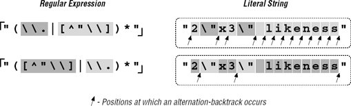
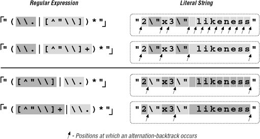

6.2. A Sobering ExampleLet's start with an example that really shows how important a concern backtracking and efficiency can be. On page 198, we came up with 6.2.1. A Simple ChangePlacing Your Best Foot ForwardSince the average double-quoted string has more normal characters than escaped ones, one simple change is to swap the order of
the alternatives, putting Figure 6-1. Effects of alternative order (Traditional NFA)In evaluating this change, consider:
❖ Consider these questions and flip the page to check your answers. Make sure that you have a good grasp of the answers (and reasons) before continuing on to the next section. 6.2.2. Efficiency Versus CorrectnessThe most important question to ask when making any change for efficiency's sake is whether the change affects the correctness
of a match. Reordering alternatives, as we did earlier, is OK only if the ordering is not relevant to the success of a match. Consider
So, be sure that you're comfortable with the correctness of a match before you worry too much about efficiency. 6.2.3. Advancing FurtherLocalizing the GreedinessFigure 6-1 makes it clear that in either expression, the star must iterate (or cycle, if you like) for each normal character, entering and leaving the alternation (and the parentheses) over and over. These actions involve overhead, which means extra workextra work that we'd like to eliminate if possible. Once while working on a similar expression, I realized that I could optimize it by taking into account that since We'll look at this example in more depth later in this chapter, but a quick look at some statistics clearly shows the benefit. Figure 6-2 looks at this example for a Traditional NFA. In comparison to the original Figure 6-2. Effects of an added plus (Traditional NFA)The big gain with the addition of plus is the resulting reduction in the number of alternation backtracks, and, in turn, the number of iterations by the star. The star quantifies a parenthesized subexpression, and each iteration entails some amount of overhead as the parentheses are entered and exited, because the engine needs to keep tabs on what text is matched by the enclosed subexpression. (This is discussed in depth later in this chapter.) Table 6-1 is similar to the one in the answer block on page 224, but with different expressions and has information about the number of iterations required by star. In each case, the number of individual tests and backtracks increases ever so slightly, but the number of cycles is drastically reduced. This is big savings.
6.2.4. Reality CheckYes, I was quite pleased with myself for this discovery.
However, as wonderful as this "enhancement" might seem, it is really a disaster waiting to happen. You'll notice that when extolling its virtues, I didn't give statistics for a POSIX NFA engine. If I had, you might have been surprised to find the "very•⋯•long" example requires over three hundred thousand million billion trillion backtracks (for the record, the actual count would be 324,518,553,658,426,726,783,156,020,576,256, or about 325 nonillion).
Putting it mildly, that is a LOT of work. This would take well over 50 quintillion years, take or leave a few hundred trillion millennia.[
Quite surprising indeed! So, why does this happen? Briefly, it's because somethingin the regex is subject to both an immediate plus and an enclosing star, with nothing to differentiate which is in control of any particular target character. The resulting nondeterminism is the killer. The next section explains a bit more. 6.2.4.1. "Exponential" matchesBefore adding the plus, With the new regex's effective Well, you get the idea there are a lot of possibilities (4,096 in this 12-character example). For each extra character in the string, the number of possible combinations doubles, and the POSIX NFA must try them all before returning its answer. That's why these are called "exponential matches." Another appealing phrase I've heard for these types of matches is super-linear. However called, it means backtracking, and lots of it![
"Ah," you might think, "but a POSIX NFA is not all that common. I know my tool uses a Traditional NFA, so I'm OK." Well, the major difference between a POSIX and Traditional NFA is that the latter stops at the first full match. If there is no full match to be had, even a Traditional NFA must test every possible combination before it finds that out. Even in the short "No•\"match\"•here example from the previous answer block, 8,192 combinations must be tested before the failure can be reported. When the regex engine crunches away on one of these neverending matches, the tool just seems to "lock up." The first time I experienced this, I thought I'd discovered a bug in the tool, but now that I understand it, this kind of expression is part of my regular-expression benchmark suite, used to indicate the type of engine a tool implements:
I used "likely" in the first bullet point because NFAs with advanced optimizations can detect and avoid these exponentially-painful neverending matches. (More on this later in this chapter ☞ 250.) Also, we'll see a number of ways to augment or rewrite this expression such that it's fast for both matches and failures alike. As the previous list indicates, at least in the absence of certain advanced optimizations, the relative performance of a regex like this can tell you about the type of regex engine. That's why a form of this regex is used in the "Testing the Engine Type" section in Chapter 4 (☞ 146). Certainly, not every little change has the disastrous effects we've seen with this example, but unless you know the work going on behind an expression, you will simply never know until you run into the problem. Toward that end, this chapter looks at the efficiency concerns and ramifications of a variety of examples. As with most things, a firm grasp of the underlying basic concepts is essential to an understanding of more advanced ideas, so before looking at ways to get around exponential matches, I'd like to review backtracking in explicit detail. | ||||||||||||||||||||||||||||||||||||||||||||||||||||||||||||||||||||||||||||||||||
 "\\.|[^\\"])*")*"
"\\.|[^\\"])*")*" to match a quoted string, with internal quotes allowed if escaped. This regex works, but if it's used with an NFA engine, the alternation applied at each character is very inefficient. With every "normal" (non-escape, non-quote) character in the string, the engine has to test
to match a quoted string, with internal quotes allowed if escaped. This regex works, but if it's used with an NFA engine, the alternation applied at each character is very inefficient. With every "normal" (non-escape, non-quote) character in the string, the engine has to test  ]
]